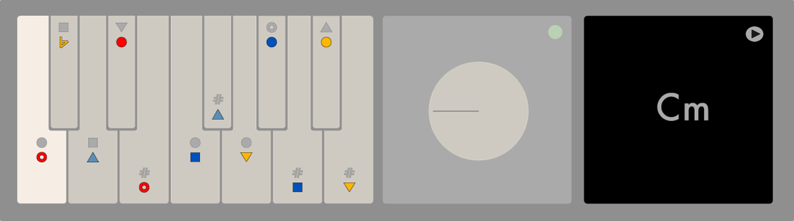

nopia
_rack

A device for Ableton Live.
A demo.
A gift.
Get it
Distributed through Gumroad
Explore chords and progressions with Nopia's Harmonic Engine
Included in version 1.0
static mode
Cm / Eb tonal center
extensions selector
chord monitor
lush electric piano samples
works with any and/or no controller
compatible with ableton live 10+
Future versions
mode selector
tone selector
bass notes
arpegiator
MIDI out
DAW compatibility ++